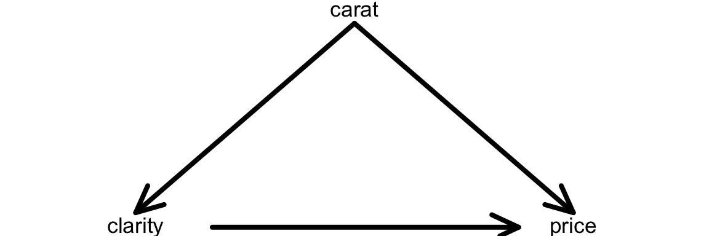

Topic 7 Multiple Linear Regression
Learning Goals
- Understand the predictive and causal viewpoints for including multiple predictor variables in regression models
- Interpret the coefficients in multiple linear regression models
- Graphically/geometrically describe the “pictures” implied by different multivariate models
- Understand how to extend linear regression models with polynomial terms to model nonlinear relationships
Discussion and Exercises
A template RMarkdown document that you can start from is available here.
New data context: diamond prices
library(readr)
library(ggplot2)
library(dplyr)
diamonds <- read_csv("https://www.dropbox.com/s/9c8jqda4pwaq8i1/diamonds.csv?dl=1")Research question: How are different factors related to the price of a diamond?
Let’s familiarize ourselves with the data:
# Display the dimensions and first few rowsKey variables:
carat: the weight of the diamond in carats (1 carat = 200 milligrams)price: price in US dollarscut: quality of the cut of the diamond (Fair, Good, Very Good, Premium, Ideal)color: Level 1 (best) to Level 7 (worst)clarity: Level 1 (worst) to Level 8 (best)x,y, andz: length, width, and depth respectively (in mm)depth: total depth percentage = z / mean(x, y)table: width of top of diamond relative to widest point
Exercise 1: What are your expectations for how price and clarity will be related? Construct a visualization to see. (Clarity level 1 is deemed worst and level 8 is deemed best.)
# Plot of price vs. clarityExercise 2: Let’s first fit a linear regression model with just clarity as a predictor of price.
mod1 <- lm(price ~ clarity, data = diamonds)
summary(mod1)Why is there no coefficient for
clarityLevel_1?Interpret the
clarityLevel_2andclarityLevel_5coefficients.Based on this output, can you tell which clarity level has the highest mean price in this dataset? Explain.
Relate the magnitudes of the coefficients to the trends that you see in your plot.
Exercise 3: What if the most clear diamonds happened to be quite small (low carat)? Would this explain why your plot looks the way it does?
We can picture the relationship between clarity, carat, and price with a causal diagram. Exercise 3 is getting us to think about carat being a confounding variable in the relationship between clarity and price. A confounding variable is a cause of both the variable of interest (clarity) and of the response variable (price):

carat being a cause of clarity tells us that there is potential for the most clear diamonds to be of systematically different sizes (likely smaller) than less clear diamonds. This idea with the fact that carat is a cause of price leads to the initially misleading relationship between clarity and price.
Wouldn’t it be nice if we could hold carat fixed and then compare diamonds of different clarity?
If we want to examine average changes in the response while letting one variable change and holding the others fixed, we can add those other variables to the model:
\[ E[\hbox{price}] = \beta_0 + \beta_1\hbox{clarityLevel_2} + \beta_2\hbox{clarityLevel_3} + \cdots + \beta_7\hbox{clarityLevel_8} + \beta_8\hbox{carat} \]
Let’s simplify this model to gain better understanding:
For clarity level 1: \[ E[\hbox{price}] = \beta_0 + \beta_8\hbox{carat} \] \(\beta_0\) is the intercept
\(\beta_8\) is thecaratcoefficient (the slope forcarat)For clarity level 2: \[ \begin{align*} E[\hbox{price}] &= \beta_0 + \beta_1 \times 1 + \beta_8\hbox{carat} \\ &= (\beta_0 + \beta_1) + \beta_8\hbox{carat} \end{align*} \] \(\beta_0+\beta_1\) is the intercept
\(\beta_8\) is thecaratcoefficient (the slope forcarat)For clarity level 8: \[ \begin{align*} E[\hbox{price}] &= \beta_0 + \beta_7 \times 1 + \beta_8\hbox{carat} \\ &= (\beta_0 + \beta_7) + \beta_8\hbox{carat} \end{align*} \] \(\beta_0+\beta_7\) is the intercept
\(\beta_8\) is thecaratcoefficient (the slope forcarat)
Observations about these clarity level-specific model formulas:
- The
caratcoefficient is always the same: \(\beta_8\) - The intercept changes for each level of
clarity- \(\beta_1\) to \(\beta_7\) indicate changes in the intercept, compared to the reference category: clarity level 1
- This model (
y ~ categorical+quantitative) is called a parallel lines model.
Exercise 4: Add to your previous model by including carat as a predictor.
mod2 <- lm(price ~ clarity+carat, data = diamonds)
summary(mod2)Write an expression for the average price of a clarity level 1 diamond that is zero carats. What coefficient does this allow you to interpret?
Write an expression for the average price of a clarity level 1 diamond that is \(C\) carats.
Write an expression for the average price of a clarity level 2 diamond that is \(C\) carats. Subtract your answer from part (b) from this expression. Based on this, give an interpretation of the
clarityLevel_2coefficient.Write an expression for the average price of a clarity level 3 diamond that is \(C\) carats. Subtract your answer from part (b) from this expression. Based on this, give an interpretation of the
clarityLevel_3coefficient.Pick any clarity level. Write an expression for the average price of two diamonds of that clarity level: (1) one with \(C\) carats and (2) one with \(C+1\) carats. Subtract (1) from (2), and thus interpret the
caratcoefficient.Compare the values of the
clarityLevelcoefficients inmod2andmod1and form a conclusion about the relationship betweenpriceandclarity.
In general, a linear regression model with multiple predictors is called a multiple linear regression model.
\[ E[y] = \beta_0 + \beta_1 x_1 + \beta_2 x_2 + \cdots + \beta_p x_p \]
Interpreting \(\beta_1\):
- Case 1: \(x_1 = a_1, \qquad x_2 = a_2, \ldots, x_p = a_p\)
\[ E[y_1] = \beta_0 + \beta_1 a_1 + \beta_2 a_2 + \cdots + \beta_p a_p \]
- Case 2: \(x_1 = a_1 + 1, x_2 = a_2, \ldots, x_p = a_p\)
Value of \(x_1\) is 1 unit higher, but otherwise exactly the same as Case 1.
\[ E[y_2] = \beta_0 + \beta_1 (a_1+1) + \beta_2 a_2 + \cdots + \beta_p a_p \]
We can compare the expected (average) response for case 1 and case 2:
\[ E[y_2] - E[y_1] = \beta_1 \]
Thus, \(\beta_1\) is the expected change in the response for every unit change in the predictor \(x_1\), holding constant the other predictors in the model.
On average, if we increase \(x_1\) by 1, we expect the response to change by \(\beta_1\), holding constant the other predictors in the model.
General strategy for interpreting regression coefficients
- Interpreting a coefficient on a quantiative variable \(x\)
- Write an expression for the expected outcome for (1) a case that has \(x = a\) and (2) a case that has \(x = a+1\)
- Make all other predictors have the same value for the two cases
- Compare the expected outcomes for the two cases to interpret the coefficient
- Interpreting a coefficient for an indicator variable for a categorical variable \(x\)
- Write an expression for the expected outcome for (1) a case that has \(x\) equal to the reference category and (2) a case that has \(x\) equal to the category of interest (the one corresponding to the coefficient)
- Make all other predictors have the same value for the two cases
- Compare the expected outcomes for the two cases to interpret the coefficient
Exercise 5: What are we assuming about the form of the relationship between price and carat by including it in the model mod2? Make an appropriate plot to check. (Make sure to add + geom_smooth() to your plot.)
Exercise 6: We can model nonlinear trends with linear regression models by adding polynomial terms. The code below fits the model
\[ E[\hbox{price}] = \beta_0 + \beta_1\hbox{clarityLevel_2} + \cdots + \beta_7\hbox{clarityLevel_8} + \beta_8\hbox{carat} + \beta_9\hbox{carat}^2 \]
mod3 <- lm(price ~ clarity + poly(carat, degree = 2, raw = TRUE), data = diamonds)
summary(mod3)The coefficients poly(carat, degree = 2, raw = TRUE)1 and poly(carat, degree = 2, raw = TRUE)2 represent \(\beta_8\) and \(\beta_9\) respectively and aren’t really interpretable anymore. But the clarityLevel coefficients still have the same interpretation as in mod2.
Do you reach the same conclusions about the relationship between
clarityandpricehere as inmod2?How does the residual standard error compare in
mod2andmod3and what does this indicate about the quality of the two models? (We can’t compare the Multiple R-squared, but we can compare the Adjusted R-squared. Coming up later!)
Exercise 7: Now let’s consider color (Level 1 is best, and Level 7 is worst.)
What do you expect the relationship between
colorandpriceto be. Make a plot to check.Fit a multiple linear regression model of
pricewithclarity,carat, andcolor(Level 1 is best, and Level 7 is worst.)Interpret the intercept,
clarityLevel_2,carat, andcolorLevel_2coefficients. If the intercept is not meaningful, what could we do to make it meaningful?For
caratto confound the relationship betweencolorandprice, what two properties must it have? Contextually, do you think that is plausible? Make plots to check if the data support that hypothesis. Do the same forcaratconfounding the relationship betweenclarityandprice.Write a few sentences summarizing the nature of the confounding role of
caratin theclarityvs.priceandcolorvs.pricerelationships.
Exercise 8: (Extra practice if you have time.)
Fit a multiple linear regression model of
pricewithclarity,carat,color, andcut.Interpret the intercept,
clarityLevel_2,carat,colorLevel_2, andcut2_Goodcoefficients.Summarize your overall findings from this model, and appropriately compare its quality to the previous models.